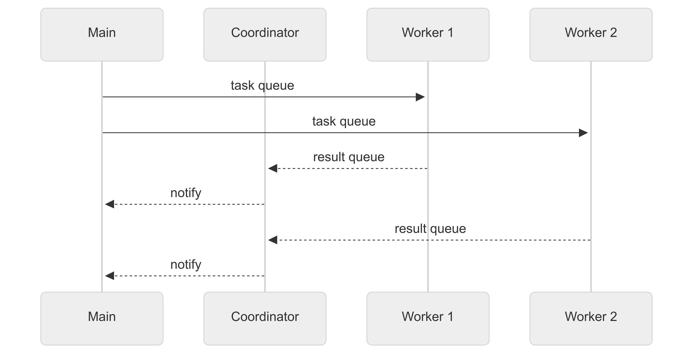

PEP-734 subinterpreters in the stdlib has officially been included in the Python 3.14 as a very late addition. If you've been following my blog posts you'll know that I'm particularly excited about this feature.
Quick Recap
I've compared it against free-threading numerous times:
My little advent of code example has been my goto benchmark of parallelism in Python. And multiple interpreters have consistently beaten free-threading in performance.
My conclusion has been that whilst threads are familiar to most Python users, tools for memory management are limited and will come as quite a shock to Python users. On the other hand, multiple interpreters are hard to use but does offer memory management. In the end, depending on the issue subinterpreters can achieve speedups that is currently unachievable in free-threading.
What's new now?
subinterpreters have now been moved to a standard library module called concurrent.interpreters but otherwise has the same API as before.
Usability
I've found two simple ways to access parallelism of interpreters.
InterpreterPoolExecutor
The new InterpreterPoolExecutor is similar to ProcessPoolExecutor.
from concurrent.futures import InterpreterPoolExecutor
def sums(num: int) -> int:
return sum(i * i for i in range(num + 1))
with InterpreterPoolExecutor() as executor:
print(list(executor.map(sums, [100_000] * 4)))
In order to pass the function itself, the arguments and return values are pickled before they are passed to the interpreters. Which will impact performance and may cancel out a lot of the performance gains over other parallelism mechanisms like free-threading and multi-processing.
On the other hand it's really easy to use, so it's still worth considering.
Interpreter's call_in_thread
call_in_thread will call the given function but it'll use shared memory to call the thread.
from concurrent.interpreters import create
def sums(num: int) -> int:
return sum(i * i for i in range(num + 1))
threads = [create().call_in_thread(sums, 100_000) for _ in range(4)]
for t in threads:
t.join()
This will be much faster than pickling, but it's still a little awkward to use.
First issue is that the function does not abstract the thread creation nor does it provide any mechanism to retrieve the results.
The bigger issue for some of my use cases are that we're not reusing interpreters. Suppose we want to call something 1000s of times over the program's life cycle. Creating 1000s of interprets will add a lot of overhead. The usability issues here would probably lead most users to use the executor and miss out on using shared memory.
My Abstraction
In my previous examples, I used Interpreter.exec to create serval long lived interpreters with Interpreter.Queues to synchronise and pass data. This was a crude attempt but worked well for my use case.
My goal this time is to generalise it such that:
- An interpreter can execute a number of different functions
- I can integrate with asyncio, as for me personally it's my "go to" way of programming concurrently.
Architecture
The architecture of the system can be represented by the following sequence diagram

We spawn multiple worker(interpreter) threads and a single coordinator thread. The worker thread consume the task queue and put results on the result queue.
The coordinator thread then picks up the results and sets the results in the future. Any awaiting tasks on the main thread will then resolve. Here's some simplified snippet of to give you some idea of how this looks:
class Runner:
def __init__(self, *, workers: int) -> None:
self._tasks = create_queue()
self._results = create_queue()
self._futures: dict[int, asyncio.Future] = {}
self._code = dedent("""
while True:
task = tasks.get()
# run function
results.put(result)
""")
self.workers = workers
def _worker(self) -> None:
interp = create()
interp.prepare_main(tasks=self._tasks, results=self._results)
interp.exec(self._code)
interp.close()
@contextmanager
def start(self) -> Iterator[Self]:
"""Start the runner in a `with` block.
This will create the workers eagerly.
"""
threads = [
Thread(target=self._coordinator, daemon=True),
*(Thread(target=self._worker, daemon=True) for _ in range(self.workers)),
]
for t in threads:
t.start()
try:
yield self
finally:
for _ in range(self.workers):
self._tasks.put(None)
for t in threads:
t.join()
def _coordinator(self) -> None:
workers = self.workers
while workers > 0:
match self._results.get():
case None:
# Interpreter closed
workers -= 1
case int(i), False, str(reason):
future = self._futures.pop(i)
future.set_exception(InterpreterError(reason))
case int(i), True, result:
future = self._futures.pop(i)
future.set_result(result)
case other:
raise InterpreterError("Unexpected queue value: ", other)
async def run[**P, R](self, fn: Callable[P, R], *args: P.args, **kwargs: P.kwargs) -> R:
future = asyncio.Future()
id_ = id(future)
self._futures[id_] = future
self._tasks.put((id_, args, tuple(kwargs.items())))
Note that the actual working example uses
loop.call_soon_threadsafe(...) the event loop is not thread safe.
Function loading
Then there's the problem of loading functions into the interpreters. As far as I can tell, the best way to do so without pickle is to import the functions inside the interpreters.
So inside the interpreter's code, I added the following utility to load functions:
import importlib
import importlib.util
from functools import cache
@cache
def load_entry_point(entry_point_type, path_or_module, name):
if entry_point_type == "module":
return getattr(importlib.import_module(path_or_module), name)
elif entry_point_type == "path":
spec = importlib.util.spec_from_file_location("my_module", path_or_module)
module = importlib.util.module_from_spec(spec)
spec.loader.exec_module(module)
return getattr(module, name)
else:
assert False
There are two ways to load functions, one using the module name. For example, from package.sub_package.module import function. The second way by the module's file path.
The module method is used by default as this is generally how Python will do imports. Paths are used in cases where the module in question is __main__ which the subinterpreters will have no concept of.
Example
I packaged my abstractions in a package called aiointerpreters which is installable on pypi. To demonstrate the advantage of multiple interpreters, I created the following crawler example.
import asyncio
import time
from contextlib import contextmanager
from typing import cast
from urllib.parse import urljoin
from bs4 import BeautifulSoup
from httpx import AsyncClient
from aiointerpreters.runner import Runner
BASE_WIKI_URL = "https://en.wikipedia.org"
urls = [...]
def parse(content: bytes) -> int:
soup = BeautifulSoup(content, "html.parser")
urls = (
urljoin(BASE_WIKI_URL, cast(str, a_tag.get("href", "")))
for a_tag in soup.select("div#bodyContent a[href]")
)
return sum(1 for _ in urls)
@contextmanager
def timer(message: str):
start = time.perf_counter()
try:
yield
finally:
print(f"{message} {time.perf_counter() - start} s elapsed")
async def run_all(urls: list[str]) -> None:
with timer("ran asyncio"):
async with AsyncClient(timeout=30) as client:
with Runner(workers=12).start() as executor:
semaphore = asyncio.Semaphore(200)
async with asyncio.TaskGroup() as tg:
for url in urls:
await semaphore.acquire()
tg.create_task(
fetch_and_count(executor, client, url),
name=url,
).add_done_callback(lambda _: semaphore.release())
async def fetch_and_count(runner: Runner, client: AsyncClient, url: str) -> None:
response = await client.get(url)
response.raise_for_status()
links = await runner.run(parse, content=response.content)
print(f"Found {url = } {links = }")
if __name__ == "__main__":
asyncio.run(run_all(urls))
The crawler example loads wikipedia pages in concurrently using asyncio and then delegates the parsing task to subinterpreters.
This combines of asyncio's fast IO bound operations and subinterpreters parallel parsing. Using the different technologies where they are most performant. The fast communication between the main thread's event loop and interpreters means performance degradation is fairly minimal.
Caveats and Next steps
The biggest caveat of all this is that we can only use shareable types which are mostly immutable. This is one area that free-threading can potentially work better, though lock contention is an issue there.
Mutability is possible via memory view objects, additionally I imagine we can use C to create shared mutable objects. But this is an area that needs more investigation.
The function loading mechanism will only work for top-level functions. This is unlikely to change as isolation is a fundamental property of interpreters. If a closure or an object method is needed we'll have to use pickling in InterpreterPoolExecutor.
Why?
I've left out the biggest question of why?.
I think subinterpreters are awesome, but I believe in its current form it's not very accessible. Bridging it to asyncio might seem strange at first but I think it's one of the easiest way to program concurrently.
My hope is that through aiointerpreters more people can quickly try this and see how much speed up they can achieve.